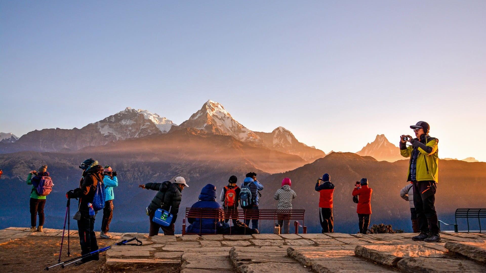

By Aakarshan Dahal
a coding begineer

TOURISM OF NEPAL:
Tourism in Nepal is a significant and dynamic industry, drawing visitors from around the world to experience the country's diverse landscapes, rich cultural heritage, and adventurous activities. Here's an overview of the tourism sector in Nepal:
1. Himalayan Adventure:
Nepal is renowned for its spectacular mountain scenery, and the Himalayas play a central role in attracting adventure seekers. Trekkers and mountaineers come to Nepal for iconic journeys like the Everest Base Camp trek, Annapurna Circuit, and various other challenging expeditions to conquer some of the world's highest peaks.
2. Mountaineering:
Home to eight of the world's 14 highest peaks, including Mount Everest, Nepal is a mountaineer's paradise. Climbers from across the globe aspire to conquer these majestic summits, contributing to the country's reputation as the ultimate destination for high-altitude mountaineering.
3. Cultural and Heritage Tourism:
Nepal's rich cultural heritage is a major draw for tourists. The Kathmandu Valley, with its medieval cities of Kathmandu, Bhaktapur, and Patan, is a UNESCO World Heritage Site, showcasing intricate architecture, ancient temples, and vibrant street life. Lumbini, the birthplace of Buddha, is another UNESCO-listed site attracting pilgrims and tourists interested in Buddhist heritage.
4. Wildlife Tourism:
Nepal is home to diverse flora and fauna, and its national parks and wildlife reserves offer excellent opportunities for wildlife enthusiasts. Chitwan National Park and Bardia National Park are renowned for their populations of Bengal tigers, one-horned rhinoceroses, and a variety of bird species.
5. Adventure Sports:
Beyond trekking and mountaineering, Nepal offers a range of adventure sports. White-water rafting, paragliding, bungee jumping, and zip-lining are popular activities, drawing thrill-seekers looking to experience the adrenaline rush against the backdrop of stunning landscapes.
6. Cultural Festivals and Events:
Nepal's vibrant festivals, such as Dashain and Tihar, offer visitors a unique opportunity to witness and participate in traditional celebrations. Festivals often include colorful processions, rituals, dances, and other cultural events, providing an immersive experience for tourists.
7. Spiritual and Wellness Tourism:
With its deep-rooted spiritual traditions, Nepal attracts individuals seeking spiritual experiences and wellness retreats. Yoga and meditation centers in places like Pokhara and Kathmandu cater to those looking for tranquility and self-discovery.
8. Responsible Tourism and Conservation:
Nepal is increasingly focusing on responsible tourism and environmental conservation. Efforts are being made to promote sustainable tourism practices, protect natural resources, and engage local communities in tourism-related activities to ensure long-term benefits.
9. Challenges and Resilience:
The tourism sector in Nepal has faced challenges, including the devastating earthquake in 2015 and the global impact of the COVID-19 pandemic. However, the industry has demonstrated resilience, and the government, along with various stakeholders, continues to work towards recovery and sustainable development.
In summary, tourism in Nepal offers a diverse range of experiences, from high-altitude adventures in the Himalayas to cultural immersions in ancient cities and serene wildlife encounters. As the country continues to evolve and adapt, tourism remains a crucial pillar of its economy, contributing to cultural exchange, economic development, and global appreciation for Nepal's unique offerings.